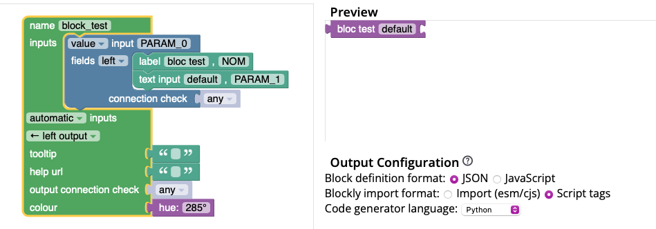
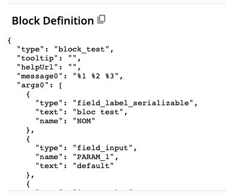

Ajouter un bloc
Ajouter un bloc COMMAND
1. Générer le bloc
- Dans blocklyUnixFilters_lib.js, ajouter la commande à la liste
COMMANDSdans sa catégorie :
Exemple : Pour ajouter une commande nommée exemple, il faut ajouter son nom, tooltip et format à la liste.
const COMMANDS = [
{
commandName: "cat",
tooltip: "Concatène et affiche le contenu d'un fichier",
format: "cat [options] fichier",
},
// Autres commandes
{
commandName: "exemple",
tooltip: "Exemple de documentation",
format: "exemple [options]",
},
];
- Dans le fichier
unixfilters, ajouter la commande dansoptionTooltipsmême si elle ne possède pas d'options.
Exemple :
(Pour ajouter des options, voir la section suivante.)
Le bloc sera ensuite créé grâce à la fonction makeCommandBlock.
2. Ajouter le bloc à la tâche
Dans le fichier task.js, ajouter le nom du bloc. L'ordre du fichier correspond à l'ordre des blocs dans la boîte à outils quand elle n'est pas triée. Le bloc sera nommé ainsi : nomdelacommande
Exemple :
function initTask(subTask) {
includeBlocks: {
generatedBlocks: {
unixfilters: [
"cat",
"exemple"
],
},
...
AJOUTER A CATEGORIES AJOUTER A LABEL
AJOUTER A JSONGENERATOR
Catégorie
Par défaut, chaque commande est dans sa propre catégorie lorsque la boîte à outils est triée par catégorie. Pour créer une catégorie particulière, voir la documentation sur Créer une catégorie.
Remarque
Lors de l'ajout d'une commande, il ne faut pas oublier de créer sa fonction correspondante dans le fichier commands.py (voir Ajouter une commande).
Ajouter un bloc OPTION
Chaque option (comme -c, -b…) génère un bloc à partir d’une structure définie dans unixfilters.js.
Lorsque vous ajoutez une option, vous devez spécifier un type.
| Type | Description | Exemple |
|---|---|---|
flag |
Pas de paramètre à remplir, juste un bloc avec une entrée et une sortie. |  |
field_index |
Affiche un input pour saisir un numéro de champ ou un délimiteur. |
1. Générer le bloc
Pour que la librairie puisse générer ce bloc, il faut :
Dans le fichier unixfilters.js, ajouter l’option sous la commande dans optionTooltips.
Exemple : Pour ajouter l'option inventée -x[FIELD_INDEX], il faut ajouter sa lettre (x), son type (field index) et son tooltip (indication qui sera affichée lorsqu'on passe la souris sur le bloc) avec la commande correspondante, on prend l'exemple de tail ici.
const optionTooltips = {
// Autres commandes
tail: {
n: {
field_index: "tail : afficher les n dernières lignes (par défaut : 10)",
},
c: { field_index: "tail : afficher les n derniers octets" },
x: { field_index: "tail : affiche x" }, // Ajout de la nouvelle option x
},
};
Le bloc sera créé automatiquement grâce à la fonction makeOptionBlock.
2. Ajouter le bloc à la tâche
Pour que le bloc soit affiché dans la tâche, il faut dans le fichier task.js, ajouter le nom du bloc.
Le bloc sera nommé ainsi : option_<lettre>_<type>où le type peut être flag/field_index.
Exemple :
function initTask(subTask) {
includeBlocks: {
generatedBlocks: {
unixfilters: [
"option_x_field_index"
],
},
...
Catégorie
-
Lorsque la boîte à outils est triée par catégorie : Par défaut, chaque option est affichée dans la catégorie de sa commande correspondante de dans
optionTooltips -
Sinon : L'ordre du fichier correspond à l'ordre des blocs dans la boîte à outils.
Ajouter un bloc SYMBOL
1. Générer le bloc
Dans le fichier blocklyUnixFilters_lib.js, ajouter le bloc dans sa catégorie correspondante.
Exemple : Pour ajouter le symbole exemple, il faut ajouter son nom, sa couleur et son tooltip.
const SYMBOL_NAMES = [
{
name: "symbole_exemple",
colour: 90,
tooltip: "Exemple de tooltip",
},
// Autres symboles
];
Le bloc sera créé automatiquement grâce à la fonction makeSymbolBlock.
2. Ajouter le bloc à la tâche
Dans le fichier [task.js], ajouter le nom du bloc. L'ordre du fichier correspond à l'ordre des blocs dans la boîte à outils. Le bloc aura ce nommage symbol_nomdusymbole
Exemple :
function initTask(subTask) {
includeBlocks: {
generatedBlocks: {
unixfilters: [
"cat",
"symbol_symboleExemple"
],
},
...
Ajouter un nouveau bloc
Si aucune des structures de blocs ne vous convient, vous pouvez ajouter un nouveau bloc. Pour définir un bloc, il existe un outil Google pour créer le bloc visuellement, et récupérer le code généré.
1. Créer un bloc
Exemple :
Avec l'outil Google, créer un bloc et générer sa définition en JSON. 
Récupérer la définition du bloc avec un copier-coller. 
{
"type": "block_test",
"tooltip": "",
"helpUrl": "",
"message0": "%1 %2 %3",
"args0": [
{
"type": "field_label_serializable",
"text": "bloc test",
"name": "NOM"
},
{
"type": "field_input",
"name": "PARAM_1",
"text": "default"
},
{
"type": "input_value",
"name": "PARAM_0"
}
],
"output": null,
"colour": 285
}
2. Ajouter dans la librairie
Dans le fichier blocklyUnixFilters_lib.js, la création du bloc peut se faire :
- Avec une définition classique (voir le bloc text_input)
context.customBlocks = {
unixfilters: {
inputs: [
{
// Bloc existant
},
{
name: "block_test",
blocklyJson: {
// On ajoute la définition du bloc ici, en remplaçant le "type" par "name"
message0: "%1 %2 %3", // Affichage des arguments
args0: [
{
type: "field_label_serializable",
text: "bloc test",
name: "NOM",
},
// Ajouter un argument text input
{
type: "field_input",
name: "PARAM_1", // nom du paramètre (à laisser car on peut de ce fait réutiliser les fonctions d'extraction)
text: "default", // texte par défaut dans l'input
},
// Ajouter une entrée droite
{
type: "input_value",
name: "PARAM_0",
},
],
output: null, // Sortie gauche
colour: 285,
},
},
],
commands: [],
symbols: [],
},
};
Le bloc block_test sera ajouté dans la catégorie "inputs" si la boîte à outils est triée par catégorie.
- Avec une fonction (voir la fonction makeGrepBlock()). Cela permet d'ajouter une logique plus complexe.
Pour l'ajouter dans une nouvelle catégorie, il faut en créer une. Voir : Ajouter une catégorie